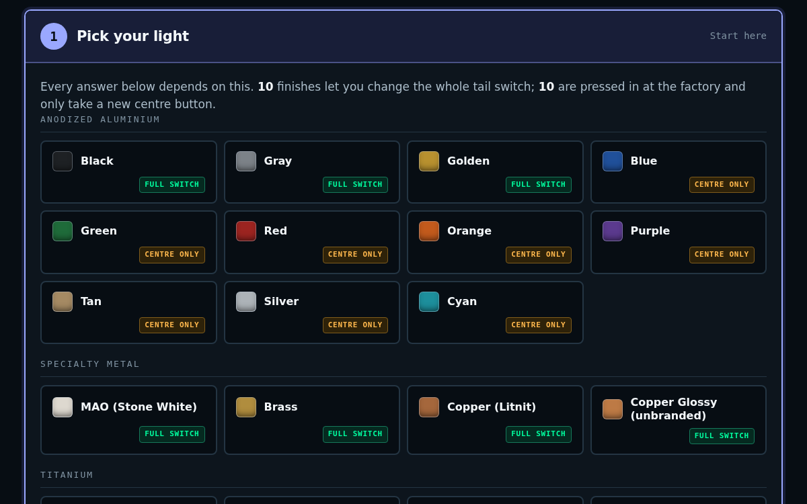
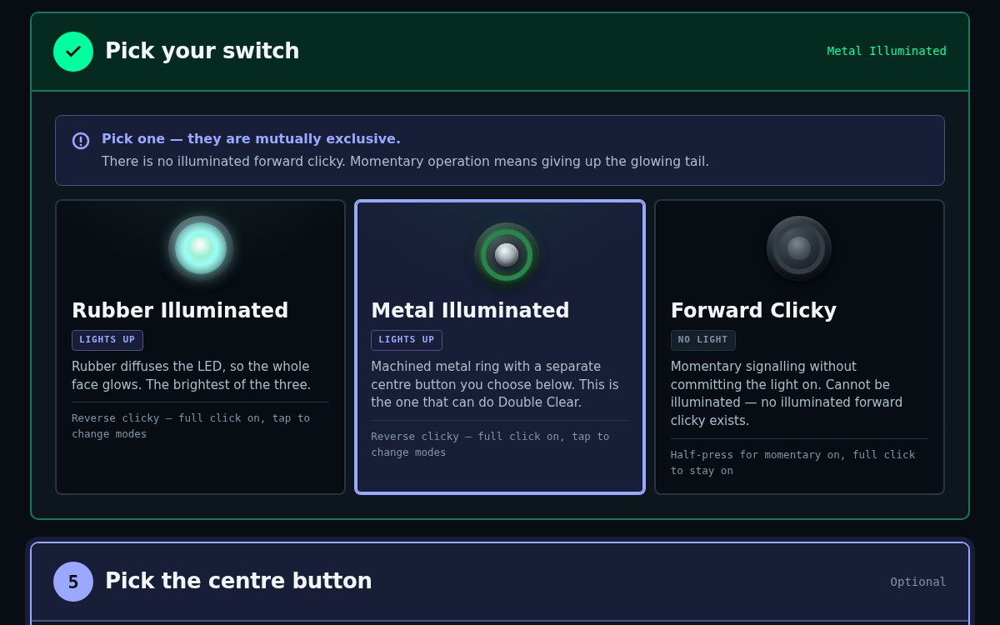
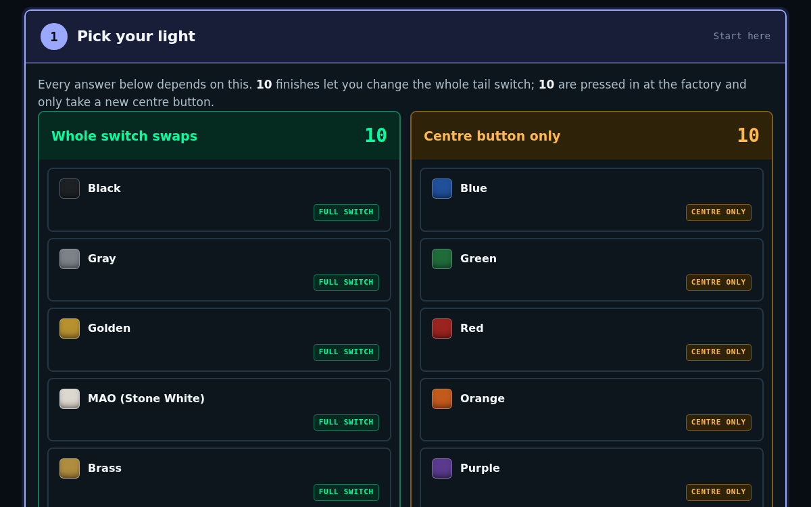

// Convoy S2+ · Switch finder
It depends on the finish. About half of them have a tail that is pressed in at the factory, and those can only change the centre button. Pick your light and the builder only offers parts that fit it.
Same rules and same parts underneath. Only the layout changes.

Console Compact. Finishes grouped by material, every step on one page. Open →
Guided The same steps with bigger type and bigger buttons. Open →
Board Finishes sorted into two columns by what they can take. Open →This is a demo copy. Part names link to gadgetconnections.com. The Add to cart button shows what the store would receive. Nothing is ordered here.